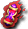

特拉莫棕毛地鼠
特拉莫棕毛地鼠
我們伺服器實際的怪物設定（不是日版 wiki 的資料）。
能力值
| 等級 | 7 |
| HP | 120～144 |
| AC | 94 |
| MC | 90 |
| 經驗值 | 228 |
| 金錢 | 60～60 |
出現地圖
| 地圖 | 數量 | 出現位置 |
| 海賊村森林3 | 306 | 整張地圖 |
掉落道具
| 道具 | 基本機率 |
 生命之水 生命之水 | 6% |
 麵包 麵包 | 6% |
| a | 5% |
| [7]絨毛鼠變身捲軸 | 0.5% |
 技能之水處方 技能之水處方 | 8% |
 小圓盾 小圓盾 | 0.2% |
| [13]參式魔法卡組材料C | 0.1% |
| [99]柒式劍卡材料A | 0.1% |
| [99]捌式劍卡材料A | 0.1% |
| [99]伍式劍卡材料D | 0.1% |
 一般外觀附魔 一般外觀附魔 | 0.1% |
 泰特拉傳說之服UG 泰特拉傳說之服UG | 0.05% |
 泰特拉女戰士胸甲UG 泰特拉女戰士胸甲UG | 0.05% |
 泰特拉女追跡服 泰特拉女追跡服 | 0.05% |
 泰特拉女功夫裝 泰特拉女功夫裝 | 0.05% |
 泰特拉塞汀弗爾凱因UG 泰特拉塞汀弗爾凱因UG | 0.05% |
 INT增幅器 5 階段製造法 INT增幅器 5 階段製造法 | 0.3% |
| 一般爆擊附魔 | 0.1% |
| EP附魔(Grade4) | 0.1% |
 黑暗四重飛刺 黑暗四重飛刺 | 0.1% |
| [亞銅合金]精煉法 | 0.1% |
 大地耳環 大地耳環 | 0.05% |
 火焰耳環 火焰耳環 | 0.05% |
 燃燒的古代捲軸 | 0.1% |
 神聖墜擊 神聖墜擊 | 0.1% |
| [英雄任務]MP捲軸 | 0.1% |
| 超級INT附魔 | 0.1% |
 藍色賽恩斯製造法 藍色賽恩斯製造法 | 0.3% |
| HIT增幅器 2 階段製造法 | 0.3% |
| CON／DEX增幅器 3 階段製造法 | 0.3% |
| STR極大器 1 階段製造法 | 0.3% |
 附魔紅色魔法石 附魔紅色魔法石 | 0.1% |
 綠色魔法石 綠色魔法石 | 0.1% |
| 魔法師鎧甲 2 階段製造法（男） | 0.3% |
| MDAM增幅器 2 階段製造法 | 0.3% |
| INT增幅器 2 階段製造法 | 0.3% |
 透輝石 透輝石 | 0.1% |
| 低階MHIT附魔 | 0.1% |
| 達吉綁腿製造法 | 0.3% |
| CON神器 4 階段製造法 | 0.3% |
 野獸臂環製造法 野獸臂環製造法 | 0.3% |
| 墮落天使之護手製造法 | 0.1% |
 火龍的祕寶 火龍的祕寶 | 0.1% |
 青金原石 青金原石 | 0.1% |
 紫水晶原石 紫水晶原石 | 0.1% |
 來歷不明的魔法石 來歷不明的魔法石 | 0.1% |
| 墮落天使之戰盔製造法 | 0.3% |
| MAC減幅器 5 階段製造法 | 0.3% |
| 鞋子加速 3 階段製造法 | 0.3% |
| DEX神器 3 階段製造法 | 0.3% |
| [鬼眼(雙手)]升級券 | 0.1% |
| [Lv3泰特拉鎧甲UG]升級券 | 0.1% |
| [3次]斧5階段升級捲軸 | 0.1% |
| [3次]槍1階段升級捲軸 | 0.1% |
| [3次]槍5階段升級捲軸 | 0.1% |
| [3次]魔法卡組4階段升級捲軸 | 0.1% |
| 墮落天使之女戰盔製造法 | 0.3% |
| STR／DEX增幅器 1 階段製造法 | 0.3% |
基本機率再乘上伺服器的掉寶倍率；「隨機一件」是從一組道具裡抽一件。